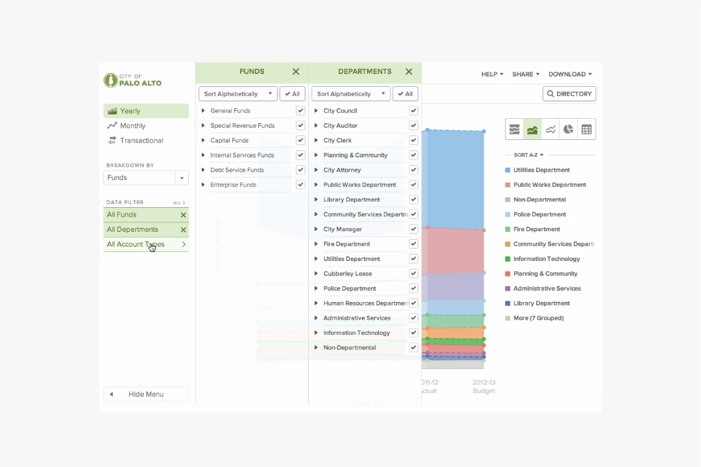
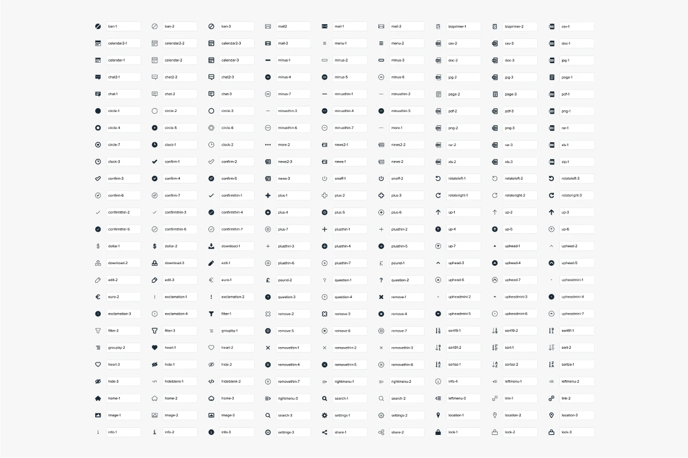

OpenGov
Rebuilding public trust in open data
Why is it so difficult to see how our government spends our money? That’s the question that OpenGov was trying to solve. After all, what could be more important than transparency to ensure that the precious tax dollars collected by the state are being used with a scrap of responsibility?
For far too long, government data has been locked away in ancient IT systems. And when data is released, it still appears inaccessible. With the goal of making it easier for citizens to find and understand how their tax money is being spent, we created tools that visualize, analyze, and share government data, allowing ordinary people to not only track government spending but also actually understand it.
As the first employee and designer at OpenGov, tons of early prototypes were developed to discover better ways to display the government’s massive financial data. To gain a good understanding of the problem and identifying opportunities, we talked to key officials of almost every single city in the Bay Area, interviewed journalists, non-profits, and engaged citizens, and evaluated the feature requests and market reports.
I made accessibility a top priority from the start. Not only do we need to be Section 508 compliant since we engaged with government entities, but I truly believe that data should be available to as many people as possible. After conducting extensive research on accessibility to help develop the design guidelines for the uesr interface, we also released it to the public as open source.
The second beta resulted in a five-fold increase in sales in the following year, and our sales picked up significantly. Within six months, we had analyzing $50B worth of government expenditure throughout the country, and thousands of engaged citizens interact with the site on a daily basis, connecting to their cities’ financials and performance with this new medium of open data.
Scope
Brand Identity, Creative Direction, User Research, User Experience Design, Information Architecture, Data Visualization, Accessibility, Design System, Visual Design, Motion Design, Illustration, Iconography
Design
JJ Moi, Zach Johnston, Andrew Liebchen, Jersy Huang
Development
Nate Levine, Krishna Rajendragon, Heath Emerson, Chris Chiu, Mike Rosengarten
Further Readings
On the founding and mission of OpenGov →
The startup analyzing $50B in spending →
OpenGov raises $51M to boost its cloud-based IT services for government and civic organizations – TechCrunch →
A singularly startup that might make a difference – Vox →
More Projects
Prime Movers
Designing for a more inclusive tomorrow
2023
Case →
Raytheon
Advancing aerospace and defense
2023
Case →
Spring
Accelerating drug discovery research
2022
Web →
18F
Scaling design systems for the people
2016
Case →
Tachyus
Optimizing oil and gas production
2016
Case →
Elicit
Automating research workflows
2015
Web →
Intersection
Helping students realize dreams
2014
Case →
Together
Telling stories of women making music
2013
Web →
More Projects
Designing for a more inclusive tomorrow
→
Advancing aerospace and defense
→
Accelerating drug discovery research
→
Scaling design systems for the people
→
Optimizing oil and gas production
→
Automating research workflows
→
Helping students realize dreams
→
Telling stories of women making music
→